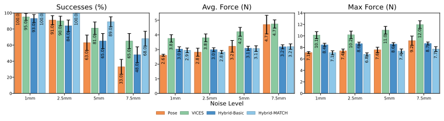
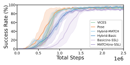
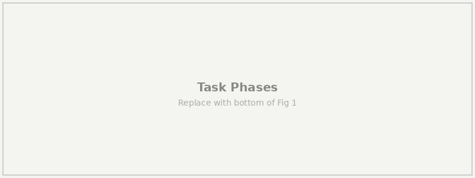
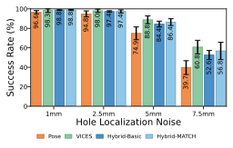
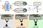

MATCH learns hybrid position-force control policies via reinforcement learning. The policy dynamically selects between position and force control per-axis, enabling directional compliance during contact-rich manipulation. Trained entirely in simulation and deployed zero-shot on a Franka FR3 robot.
1,600+
Sim-to-Real Robot Trials
+35%
Success over Pose at extreme noise
~30%
Less force than VICES
0%
Peg breaks in 900+ sim and real trials
Abstract
Reinforcement learning-based control policies have been frequently demonstrated to be more effective than analytical techniques for many manipulation tasks. Commonly, these methods learn neural control policies that predict end-effector pose changes directly from observed state information. For tasks like inserting delicate connectors which induce force constraints, pose-based policies have limited explicit control over force and rely on carefully tuned low-level controllers to avoid executing damaging actions.
In this work, we present hybrid position-force control policies that learn to dynamically select when to use force or position control in each control dimension. To improve learning efficiency of these policies, we introduce Mode-Aware Training for Contact Handling (MATCH) which adjusts policy action probabilities to explicitly mirror the mode selection behavior in hybrid control. We validate MATCH's learned policy effectiveness using fragile peg-in-hole tasks under extreme localization uncertainty.
We find MATCH substantially outperforms pose-control policies — solving these tasks with up to 10% higher success rates and 5x fewer peg breaks than pose-only policies under common types of state estimation error. MATCH also demonstrates data efficiency equal to pose-control policies, despite learning in a larger and more complex action space. In over 1,600 sim-to-real experiments, we find MATCH succeeds twice as often as pose policies in high noise settings (33% vs. 68%) and applies ~30% less force on average compared to variable impedance policies on a Franka FR3 in laboratory conditions.
Fragile Peg-in-Hole
We evaluate on fragile peg-in-hole (fPiH), a canonical contact-rich manipulation task with strict force constraints. The peg has a circular cross-section with ~0.5mm clearance. If force exceeds a break threshold of Fth = 10N, the peg breaks and the task fails.
During training, Gaussian noise is applied to the policy's observation of the hole position (σ=1mm), end-effector position (σ=0.25mm), and force sensing (σ=1N). At evaluation, we test under increasing uniform localization noise on the hole position — up to ±7.5mm, nearly the full 8mm hole diameter.
Experimental setup and evaluation conditions. (Left) Franka FR3 robot. (Top right) Top-down view of the hole with estimated position distributions at each noise level — at the highest setting, the estimated position can be off by nearly the entire hole diameter. (Bottom right) 3D-printed peg and hole with ~0.5mm clearance.
Sim-to-Real Experiments
We deployed simulation-trained policies directly to a Franka FR3 robot with no fine-tuning. The peg and hole were 3D printed with ~0.5mm clearance. Force was estimated from joint torques and filtered with an exponential moving average. Over 1,600 trials were conducted across four noise levels and four policy types.
Pose
VICES
MATCH (Ours)
Real robot rollouts with force profiles. Each video shows a trial in the very high noise setting with the estimated end-effector forces. MATCH maintains gentle motion, with sustained contact. Pose control shows an inability to regulate forces as they vary significantly. VICES shows the quickest solution, but still hits with large initial forces.

Real robot results. Five simulation-trained policies were evaluated with 30 noiseless trials and the highest success rate policy was kept, then evaluated on increasing noise conditions (100 trials per condition). MATCH substantially outperforms Pose (+35% at very high noise), achieving comparable success to VICES while exerting ~30% less force.
Simulation Experiments
We evaluate all methods in simulation across the four noise levels described above. Each of five seeds was evaluated across 500 episodes per noise condition.
Pose
Pose video
VICES
VICES video
MATCH (Ours)
MATCH video
Interactive simulation rollouts. Browse different noise conditions using ← → arrows. Each condition shows all three methods starting from the same initial state and noise realization, allowing direct comparison of contact behavior and insertion strategy across methods.
Method
Success (%) ↑
Break (%) ↓
Time (s) ↓
Force (N) ↓
Pose
95.4 ± 1.6
1.6 ± 1.5
2.5 ± 0.4
1.9 ± 0.3
VICES
95.2 ± 2.4
1.4 ± 2.3
2.7 ± 0.2
2.0 ± 0.2
Hybrid-Basic
98.2 ± 0.7
0.4 ± 0.5
2.4 ± 0.1
3.0 ± 0.4
Hybrid-MATCH
97.0 ± 1.5
0.0 ± 0.0
2.5 ± 0.2
2.7 ± 0.2
MATCH (no-SSL)
82.0 ± 5.1
8.2 ± 3.8
2.4 ± 0.2
1.7 ± 0.2
Basic (no-SSL)
87.0 ± 1.4
2.6 ± 1.9
2.6 ± 0.2
1.8 ± 0.2
Table I. Nominal performance on fragile peg-in-hole. Results averaged over 5 seeds. MATCH achieves 97% success with zero peg breaks across 500 trials. Hybrid methods maintain higher but still-safe forces through sustained contact.
Robustness to localization noise. Success rate and break rate under increasing hole localization noise. All methods degrade with larger noise, but force-aware methods maintain nearly 10% higher success rates. Training Pose with higher noise (σ=2.5mm) does not improve performance — in fact, Pose(2.5mm) shows substantially worse performance across all noise levels, as the strict force constraints degrade the learning signal under greater uncertainty. Break rates for hybrid policies remain less than half of pose control.
Learning Efficiency
Hybrid control introduces a more complex action space compared to Pose. Our uninformed Hybrid-Basic formulation takes considerably longer to begin learning, likely due to uninformative gradients. In contrast, MATCH, which explicitly models the underlying hybrid controller, trains comparably to the simpler Pose method while retaining the benefits of hybrid control.

Learning efficiency. MATCH trains comparably to Pose and VICES while Hybrid-Basic requires considerably more data. Ablations lacking the supervised selection loss (no-SSL) learn substantially slower. This is mainly due to the no-SSL policies degenerating to using only pose control and not exploring effective force actions. SSL provides a continuous signal in training that encourages exploration of force actions. Together with MATCH's action distribution we capture the data efficiency of the much simpler pose-only control.
Learned Control Strategy
MATCH discovers a physically meaningful hybrid control strategy without explicit task-phase engineering. The policy learns to use position control in free space, switch to force control upon contact (particularly in the z-axis to maintain contact with the hole rim), and return to position control for the insertion descent.

Task phases and learned selection strategy. (Top) Three phases of fragile peg-in-hole. During approach, the robot moves toward the hole in free-space where force control is dangerous — MATCH consistently predicts near-zero probability of force control. Upon initial contact, force control probability spikes, most pronounced in the z-direction, as the policy maintains firm contact with the hole rim while searching for alignment via position control in xy. During insertion, z-axis force control decreases as position control affords better regulation of the peg's descent. (Bottom) Force control selection probability across phases, showing this physically meaningful strategy emerges entirely from training.
Selection rollout. A single rollout showing the mode selection probability overlaid on the robot's behavior.
Tasks Without Force Constraints
One possible explanation for the above results is that the force-aware methods are advantaged due to the strict force constraints in the task. To test this, we evaluated the methods after training with an unbreakable peg. Even without force constraints, MATCH and VICES outperform Pose by 17–21%, indicating that force regulation provides generally useful behaviors for in-contact manipulation.

Unbreakable peg. Success rate as hole localization noise increases with no force constraints. Force-aware methods (MATCH, VICES) improve performance in tasks without explicit force constraints.
Method

Method overview. The MATCH policy outputs pose goals, force goals, and a per-axis binary mode selection. The hybrid controller uses only the selected component per axis, enabling directional compliance during contact.
MATCH addresses a fundamental challenge in learning hybrid position-force control with reinforcement learning: when the controller selects position control in a given axis, the force output for that axis has no effect on the robot's behavior, and vice versa. Standard mixed discrete-continuous formulations propagate gradients through all outputs regardless of which are actually used, producing uninformative updates.
Mode-Aware Action Distribution
MATCH conditions the action probability on the selected mode, so only the active controller component receives gradient updates. This directly mirrors how the hybrid controller uses policy outputs and resolves the credit assignment problem.
For each control dimension $i$, the policy outputs a selection probability $\phi_i$ parameterizing a Bernoulli over the binary mode variable $\Lambda_i$ (where $\Lambda_i = 1$ selects pose control and $\Lambda_i = 0$ selects force control). It also outputs pose target parameters $(\mu_i^x, \sigma_i^x)$ and force target parameters $(\mu_i^f, \sigma_i^f)$. The per-dimension action distribution $c(a_i)$ is then defined as:
Since early exploration occurs predominantly in free space — where force control risks unbounded acceleration — the policy quickly learns to avoid selecting force control entirely. This bias persists even after the policy begins making contact, as only 20–40% of training steps involve contact. To counteract this, we introduce a Supervised Selection Loss (SSL) that encourages exploring force actions when contact becomes more frequent. SSL is defined as the binary cross-entropy between the selection probability $p(\Lambda_i)$ and the true contact state $\psi_i$ in each control dimension: